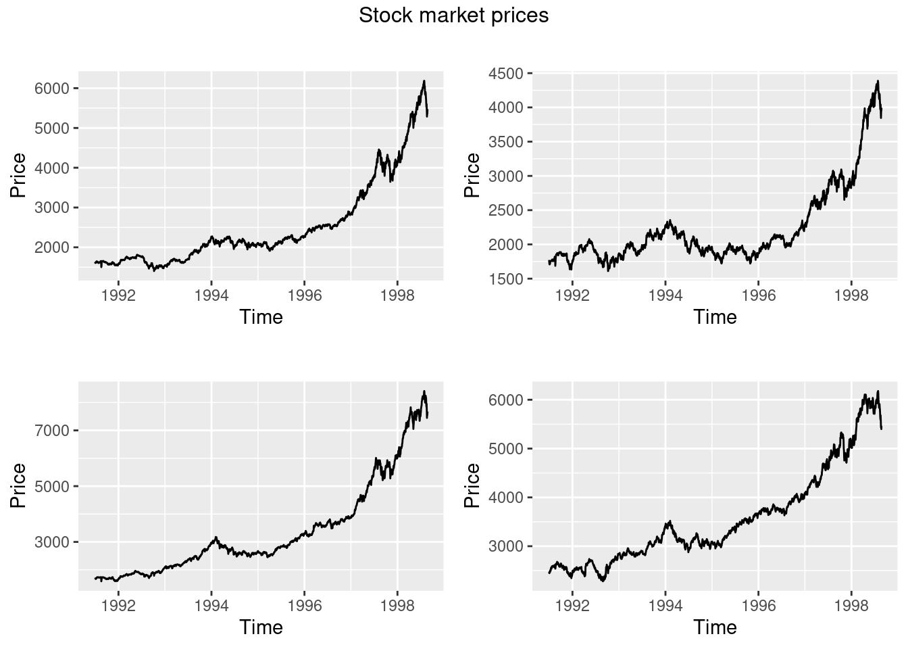
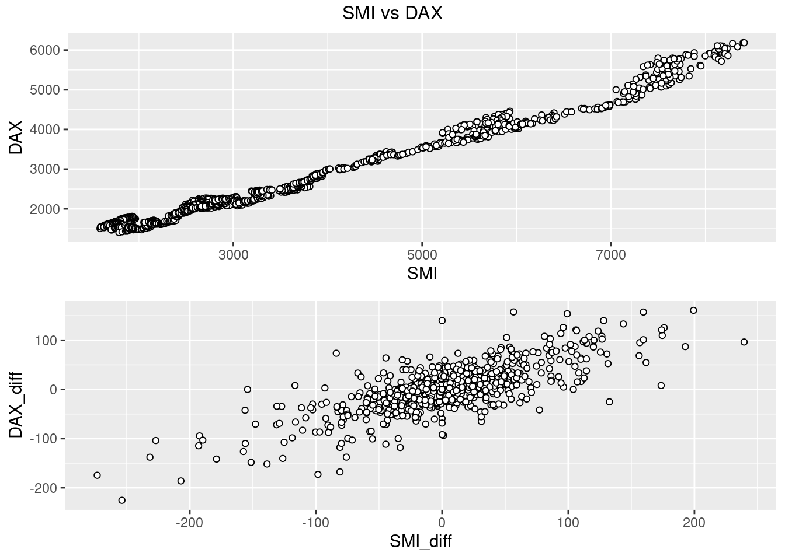
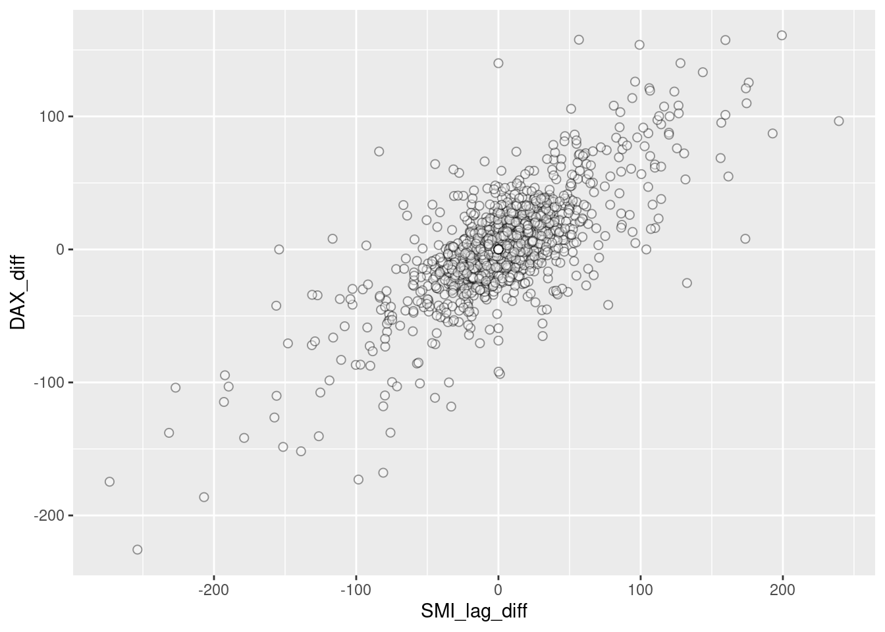
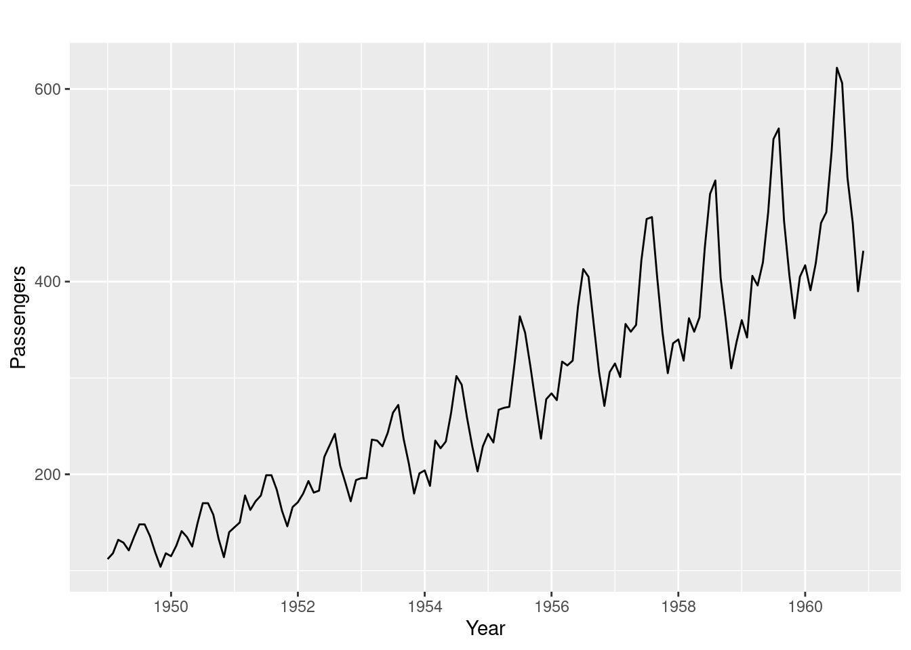
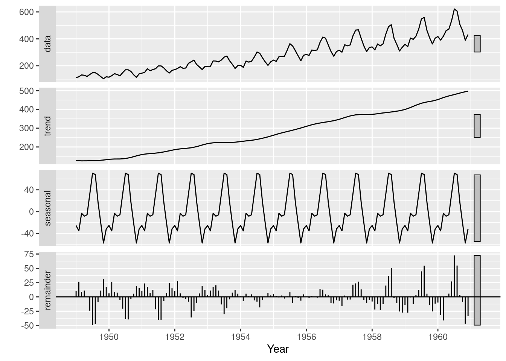
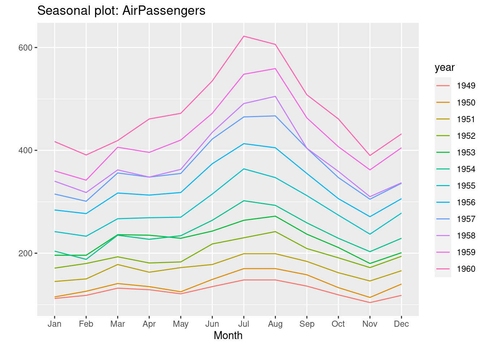
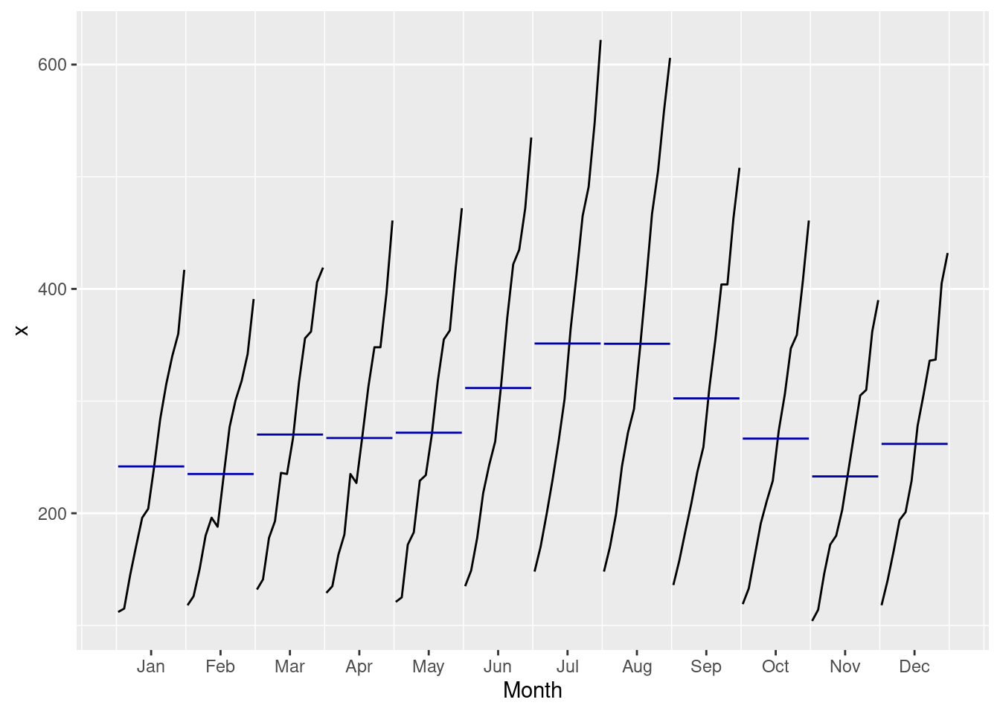
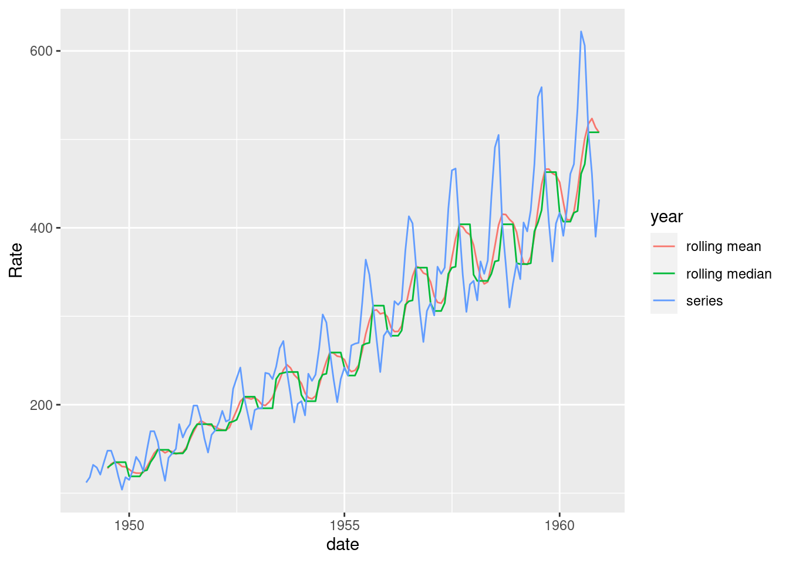

27 Visualizing Time Series Data
Kate Lassiter
27.0.0.1 Starting Point
Same exploratory questions as with any new data set:
- Strongly correlated columns
- Variable means
- Sample variance, etc.
Use familiar techniques:
- Summary statistics
- Histograms
- Scatter plots, etc.
Be very careful of lookahead!
- Incorporating information from the future into past smoothing, prediction, etc. when you shouldn’t know it yet
- Can happen when time-shifting, smoothing, imputing data
- Can bias your model and make predictions worthless
27.0.0.2 Working with time series (ts) objects
Integration of ts() objects with ggplot2:
- ggfortify package
- autoplot()
- All the same customizations as ggplot2
- Don’t have to convert from ts to dataframe format
- gridExtra package
- Arrange the 4 ggplot plots as a 4-panel grid
- grid package
- Add title to the grid arrangement
dax=autoplot(EuStockMarkets[,"DAX"])+
ylab("Price")+
xlab("Time")
cac=autoplot(EuStockMarkets[,"CAC"])+
ylab("Price")+
xlab("Time")
smi=autoplot(EuStockMarkets[,"SMI"])+
ylab("Price")+
xlab("Time")
ftse=autoplot(EuStockMarkets[,"FTSE"])+
ylab("Price")+
xlab("Time")
grid.arrange(dax,cac,smi,ftse,top=textGrob("Stock market prices"))
27.0.0.3 Time series relevant plotting:
Working with the data:
- Directly transforming ts() objects for use with ggplot2:
- complete.cases() to easily remove NA rows - prevent ggplot warning
- avoid irritations of working with ts objects
Looking at changes over time:
- Plot differenced values
- Histogram/scatter plot of the lagged data
- Shows change in values, how values change together
- Trend can hide true relationship, make two series appear highly predictive of one another when they move together
- Use base package diff(), calculates difference between point at time t and t+1
new=as.data.frame(EuStockMarkets)
new$SMI_diff=c(NA,diff(new$SMI))
new$DAX_diff=c(NA,diff(new$DAX))
p1 <- ggplot(new, aes(SMI,DAX))+
geom_point(shape = 21, colour = "black", fill = "white")
p2 <- ggplot(new[complete.cases(new),], aes(SMI_diff,DAX_diff))+
geom_point(shape = 21, colour = "black", fill = "white")
grid.arrange(p1,p2,top=textGrob("SMI vs DAX"))
Exploring Time Lags:
- Lagged differences:
- Time series analysis: focused on predicting future values from past
- Concerned whether a change in one variable at time t predicts change in another variable at time t+1
- lag() to shift forward by one
- Showing density using alpha
new$SMI_lag_diff=c(NA,lag(diff(new$SMI),1))
ggplot(new[complete.cases(new),], aes(SMI_lag_diff,DAX_diff))+
geom_point(shape = 21, colour = "black", fill = "white",alpha=0.4,size=2)
Now there is no apparent relationship: positive change in SMI today won’t predict positive change in DAX tomorrow. There is a positive trend over the long term, but this does little to predict in the short term
Observations:
- Careful with time series data: use same techniques, but reshape data
- Change in values from one time to another is vital concept
27.0.1 Dynamics of Time Series Data
27.0.1.1 Seasonality, Cycle, Trend
Three aspects of time series data:
- Seasonal:
- Recurs over a fixed period
- Cycle:
- Recurrent behaviors, variable time period
- Trend:
- Overall drift to higher/lower values over a long time period
- Overall drift to higher/lower values over a long time period
These can be gathered through visual inspection:
- Line plot
- Clear trend
- Consider log transform or differencing
- Increasing variance
- Multiplicative seasonality
- Seasonal swings grow along with overall values
- Clear trend

- Time series decomposition:
- Break data into seasonal, trend, and remainder components
- Seasonal component:
- LOESS smoothing of all January values, February values, etc.
- Moving window estimate of smoothed value based on point’s neighbors
- stats package
- stl()
- stl()

- Observations
- Clear rising trend
- Obvious seasonality
- Difference between the two methods:
- This particular decomposition shows additive, not multiplicative seasonality
- But start and end time series have highest residuals
- Settled on the average seasonal variance
- This particular decomposition shows additive, not multiplicative seasonality
- Both reveal information on patterns that need to be identified and potentially dealt with before forecasting can occur
27.0.1.2 Plotting: exploiting the temporal axis
27.0.1.2.1 Gannt charts
- Shows overlapping time periods, duration of event relative to others
- timevis package
27.0.1.2.2 Using month and year creatively in line plots
- forecast package
- ggseasonplot()
- ggmonthplot()
- suppressMessages() prevents printing information outputted when loading a package
ggseasonplot(AirPassengers)
ggmonthplot(AirPassengers)
- Observations
- Some months increased more over time than others
- Passenger numbers peak in July or August
- Local peak in March most years
- Overall increase across months over the years
- Growth trend increasing (rate of increase increasing)
27.0.1.2.3 3-D Visualizations: plotly package
- Convert to a format plotly will understand
- Avoid using ts() object
- Dataframe with datetime, numeric columns
- lubridate package for date manipulation
new = data.frame(AirPassengers)
new$year=year(seq(as.Date("1949-01-01"),as.Date("1960-12-01"),by="month"))
new$month=lubridate::month(seq(as.Date("1949-01-01"),as.Date("1960-12-01"),by="month"),label=TRUE)
plot_ly(new, x = ~month, y = ~year, z = ~AirPassengers,
color = ~as.factor(month)) %>%
add_markers() %>%
layout(scene = list(xaxis = list(title = 'Month'),
yaxis = list(title = 'Year'),
zaxis = list(title = 'Passenger Count')))- Allows a better view of the relationships between month and year
27.0.1.3 Data Smoothing
- Usually need to smooth the data before starting analysis or visualization
- Allows better storytelling
- Irrelevant spikes dominate the narrative
- Methods:/
- Moving average/median
- Good for noisy data
- Rolling mean reduces variance
- Keep in mind: affects accuracy, R² statistics, etc.
- Zoo package rollmean()
- Prevent lookahead, use past values as the window (align=“right”)
- k = 6 is a 6 month rolling window
- gsub() substitute series names for the clearer legend
- tidyr package gather()
- Convert from wide to long, use this as color/group in ggplot
- Moving average/median
new = data.frame(AirPassengers)
new$AirPassengers=as.numeric(new$AirPassengers)
new$year=seq(as.Date("1949-01-01"),as.Date("1960-12-01"),by="month")
new = new %>%
mutate(roll_mean = rollmean(new$AirPassengers,k=6,align="right",fill = NA))
df <- gather(new, key = year, value = Rate,
c("roll_mean", "AirPassengers"))
df$year=gsub("AirPassengers","series",df$year)
df$year=gsub("roll_mean","rolling mean",df$year)
df$date = rep(new$year,2)
ggplot(df, aes(x=date, y = Rate, group = year, colour = year)) +
geom_line()

* Exponentially weighted moving averages
* Weigh long past values less than recent
* Geometric mean
* Combats strong serial correlation
* Good for series with data that compounds greatly as time goes on